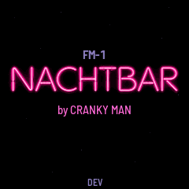

FM-1 NACHTBAR
A tenor sax over a song, for the M-VAVE FM-1 · by Cranky Man
Early test build · nightly 0.9.99-nightly, not a release.
It is here to be tested. It has not been measured on a real FM-1 yet: how it sounds there, its CPU load and the screen's speed are what testers are asked to report.
A tenor saxophone, recorded by Cranky Man, played one note at a time (keys held together slur, and it plays as hard as you strike) over a backing that plays itself: soft strings on the tune's chords, a high piano playing short gestures on them (a sampled grand's high notes) and a quiet drummer with brushes, at the tune's tempo. The sax snaps to the tune's scale; the song plays from power-on, PLAY stops and starts it, REC holds a chord as long as you like, and EDIT opens the tune's chords, to change them and keep them in a user preset. PRESET picks one of sixteen tunes: seven after the chords of pieces by others (Neon Rain after Vangelis's Love Theme, and six more), the rest plain progressions of their styles: charts, two endless walks and a drone, in 3, 4 and 6 beats a bar. Over minutes the backing swells and thins, and some tunes drift up a fourth now and then. Their chords; the melody is yours. Play it from a MIDI keyboard (the TRS MIDI jack, or USB from a computer or a MIDI host), or from the FM-1's own keys.



How to test
- Try it in the emulator first if you like, then install it from the test build's installer.
- Listen for dropouts or crackle on busy tunes: DORIAN NIGHT with RHYTM on swing (the second Song page) and PIANO at 100 % (the Song page), for example.
- Look at the Setup page (GLO) after playing a while: the CPU PEAK and the LONGEST FRAME. Note them with the tune and its settings.
- The keys' feel: how soft and hard notes come out, and keys held together slurring.
- The Chords page (EDIT): change a tune's chords, keep them in a user preset with SAVE, load it again with PRESET.
Report at github.com/FartyPants/fm1-nachtbar/issues: the tune, the settings, the figures and what you heard or saw.
Before you install
Installing it replaces the firmware now on the FM-1. SAVE in the FM-1 NACHTBAR writes the place in the flash where other FM-1 firmwares keep their saved settings: theirs may be lost. To go back, install the other firmware again from its own installer; for M-VAVE's own, use the installer's "Back to the stock firmware", or M-VAVE's updater, M-UPGRADE, from m-vave.com/download. Installing other firmware is at your own risk.
The FM-1 NACHTBAR is based on FM-1 TENOR SAX, the FM-1 Hybrid Piano and NACHTFAHRT (FartyPants; the strings, the walk and the piano voice are NACHTFAHRT's, the piano a sampled grand's high notes, VCSL, CC0, by way of Felucca, read by SEA, MIT, as in M-VAVE's fm1_open), themselves based on DUB-1 by sbegueria and AMB-1 by Charles Vestal; the platform is Felucca by Leo Kuroshita (Hügelton Instruments). The sax and the drums are Cranky Man's own recordings (the brush tap is synthesised, its noise section modelled on Skiff's DRUM-X); the codec is QOA (MIT). Seven tunes follow only the chords of pieces by others; the FM-1 NACHTBAR is not connected with any of their artists. GPL-3.0-only. The source will be published in this repository with version 1.0; until then it is available on request (open an issue at github.com/FartyPants/fm1-nachtbar/issues). M-VAVE and FM-1 are trademarks of their owners. The FM-1 NACHTBAR is not affiliated with M-VAVE or Hügelton Instruments.